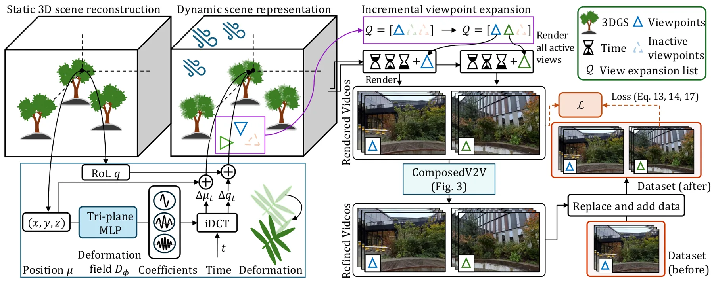
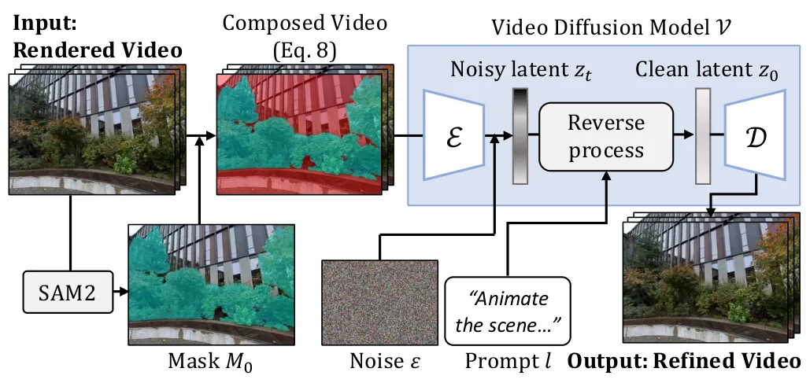
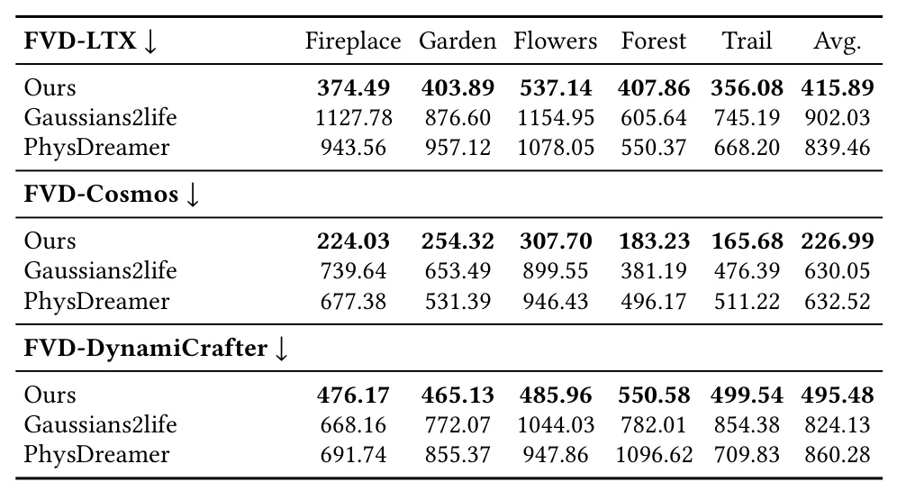
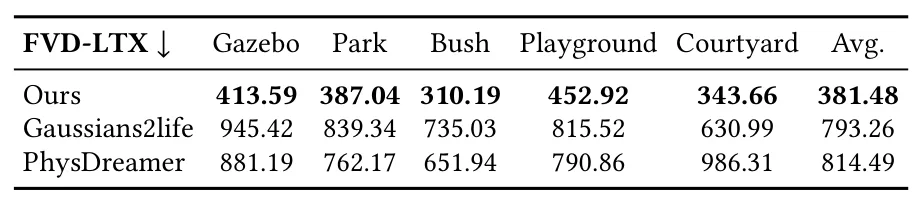
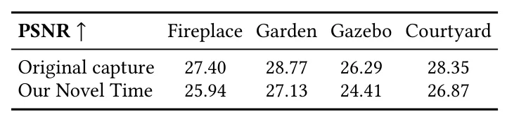
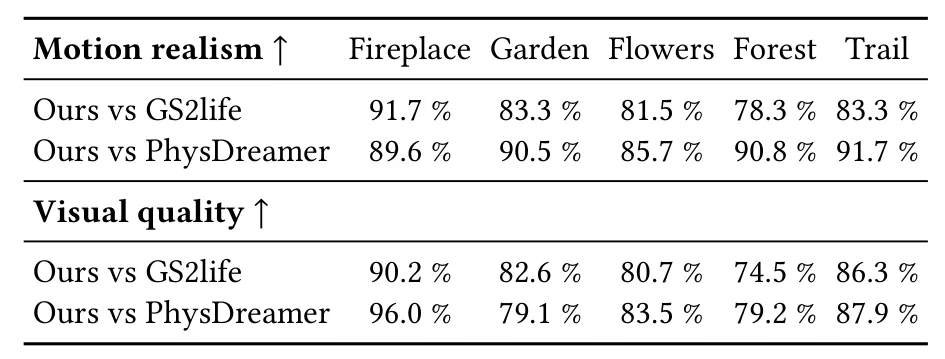
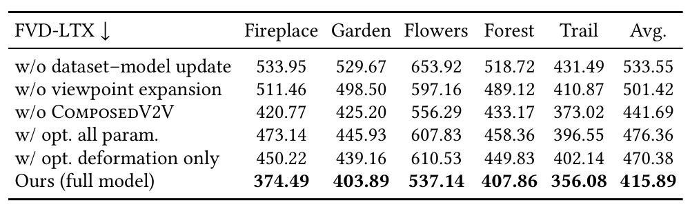

AniGS：连接渲染与扩散先验的三维场景动画AniGS: Bridging Rendering and Diffusion Prior for 3D Scene Animation
大型场景动态化有展示价值，但属于重建后动画，不提供动态 SLAM 的可测几何估计。
一句话工作总结
用时变形变场和视频扩散先验，为大型静态 3DGS 重建添加区域受控的环境微动。
摘要
AniGS 为大型复杂 3DGS 重建添加植被等细微分布式动态，同时保持刚性结构不动。系统以 canonical 3DGS 表示场景，用 time-conditioned deformation field 建模运动，并借助预训练视频扩散模型，通过迭代 dataset-model update 与 render-and-refine 扩大视角覆盖；composed video-to-video refinement 将运动限制在目标区域。五个真实大型室外场景实验展示了自然环境动态和较高质量的新视角视频。
Novel view rendering of large and complex reconstructed scenes is becoming increasingly photorealistic. However, most reconstructions remain static and lack the ambient motion that makes environments immersive. We present AniGS, a method for scene-level animation of 3D Gaussian Splatting (3DGS) reconstructions that adds subtle, distributed dynamics, e.g., vegetation motion, while preserving rigid structures. Unlike existing 3D animation techniques which are limited to object-centric subjects or small regions, AniGS is designed for large, cluttered, navigable scenes. AniGS represents the scene with a canonical 3DGS and models motion using a time-conditioned deformation field. To animate the entire scene, we leverage a pretrained video diffusion model and introduce an iterative dataset--model update strategy that progressively expands viewpoint coverage and repeatedly updates camera-fixed training videos using a render-and-refine scheme. To prevent artifacts from unintended motion in static areas, we further introduce a composed video-to-video refinement scheme that restricts motion to desired regions. Experiments on five real-world, large-scale outdoor scenes demonstrate that AniGS produces natural ambient dynamics and high-quality novel view videos, enabling more immersive viewing experiences of reconstructed environments.
中文解读摘录
- 作者：Yen-Chi Cheng, Chen Gao, Chuhan Chen, Tuotuo Li, Rajvi Shah, Ayush Saraf, Changil Kim, Liangyan Gui
- 价值判断：从静态大型 3DGS 出发，用 time-conditioned deformation field 与视频扩散先验添加植被等分布式微动，同时约束刚性区域保持静止。
- 技术要点：通过 render-and-refine 迭代扩展视角覆盖，并用 composed video-to-video refinement 限制运动区域。
- 领域边界：属于重建后动画而非动态 SLAM；需核查几何一致性、跨视角时序稳定性和扩散先验引入的非真实运动。
- 链接：arXiv · 项目页
图表/页面预览

{kind=link}

{kind=link}

{kind=link}

{kind=link}

{kind=link}

{kind=link}

{kind=link}
